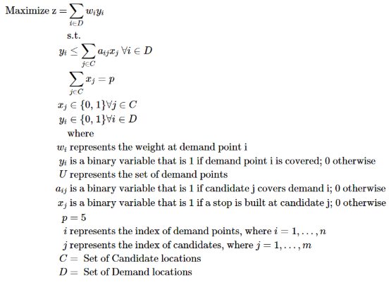

Recent graduate at The Ohio State University | Data Analyst / Scientist
Formulated a Maximum Coverage Location Problem (MCLP) using Python and Gurobi to optimize bus stop placement across Columbus, integrating U.S. Census and COTA transit data to help approximately 43,000 residents under infrastructure constraints
Here is our full model, with a list of the variables, constraints, and objective function labeled:

Shown below are the results that my team derived. The Grey dots represent existing stops, blue dots represent potential new stops, and red dots represent the selected new (optimal) stops. These results show that our model fulfills its intended purpose and provides an efficient and data driven approach to expanding the COTA bus network.

The table below summarizes each of the five chosen stops, including GEOID, geographic coordinates, and the population covered by each location. Across all five stops, the model adds 42,986 additional residents to the covered population. This represents a substantial increase relative to the baseline network and demonstrates that a small number of well-placed stops can greatly expand accessibility.
| Selected Stop | GEOID | Latitude | Longitude | Population |
|---|---|---|---|---|
| 16 | 39049009390 | 39.974217 | -82.790753 | 7,768 |
| 40 | 39049006241 | 40.077974 | -83.165966 | 8,591 |
| 41 | 39049007398 | 40.013312 | -82.780411 | 9,389 |
| 82 | 39049009755 | 39.869836 | -83.044463 | 7,639 |
| 130 | 39049007209 | 40.068750 | -82.852063 | 9,599 |
For a more in-depth explanation, feel free to look at our report!